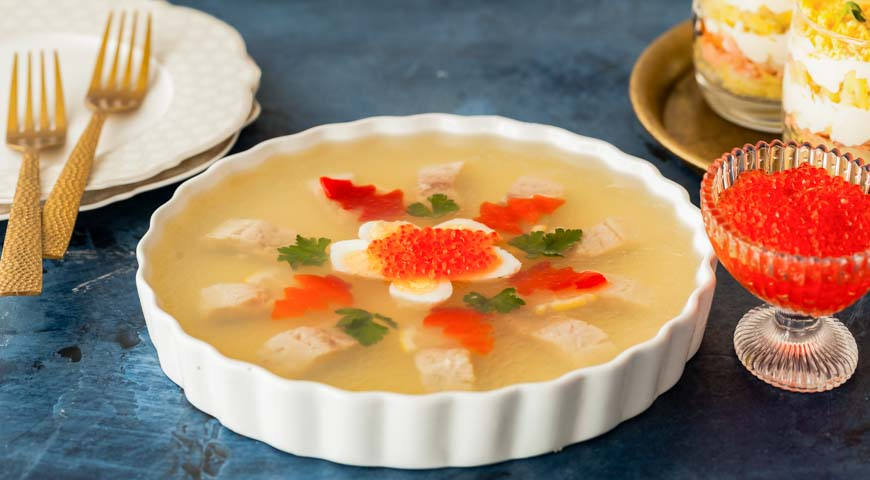
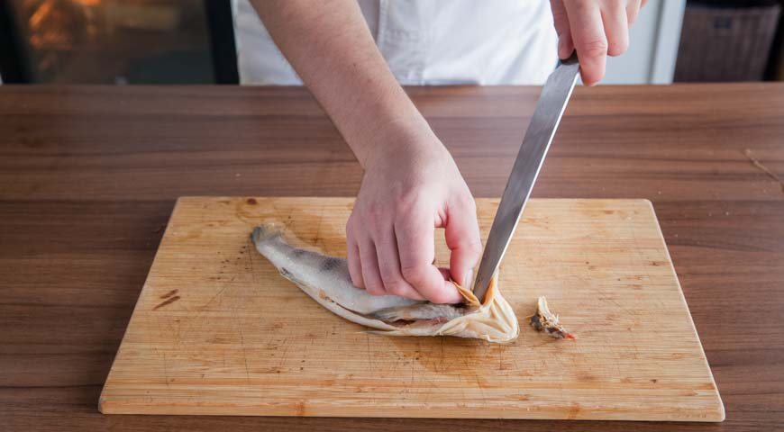
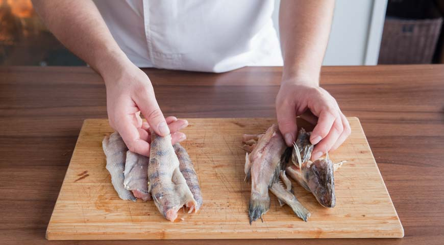
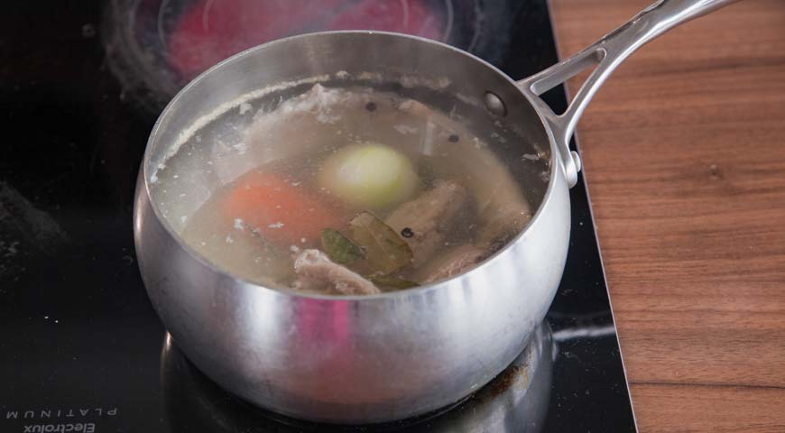
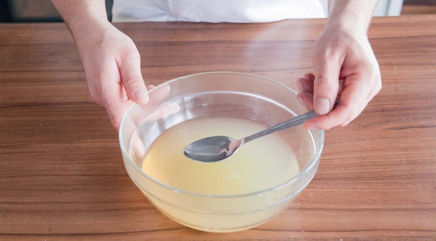
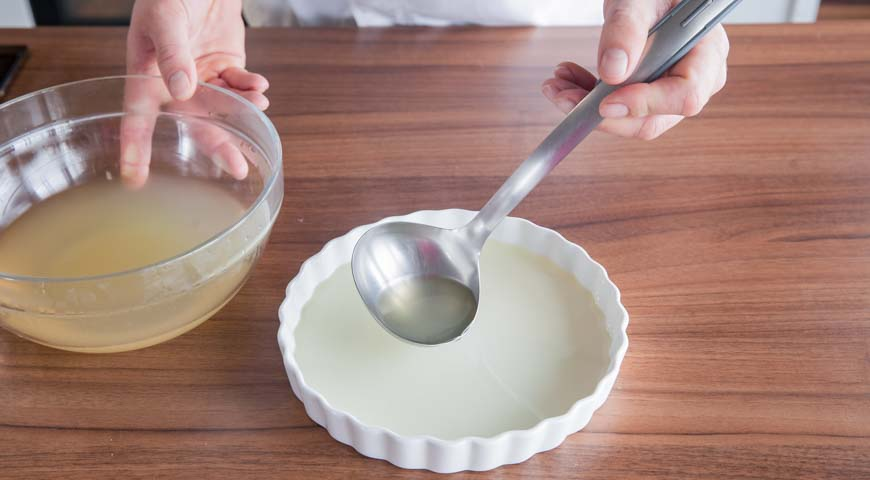
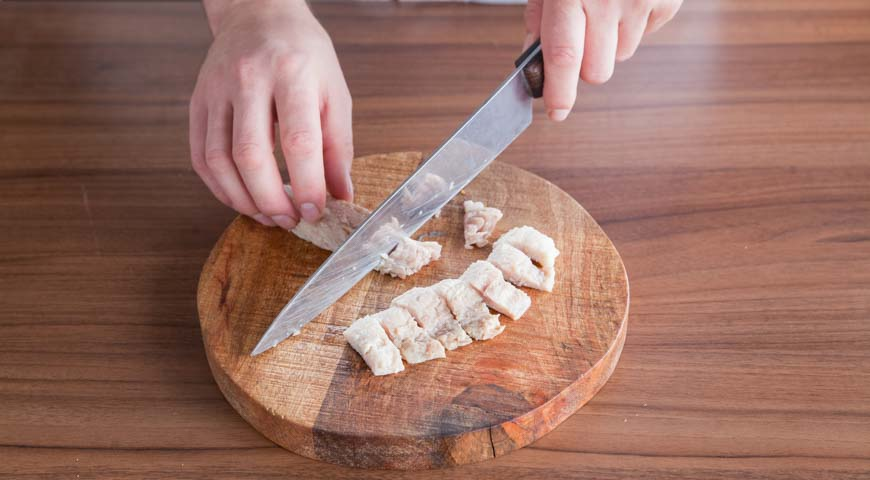
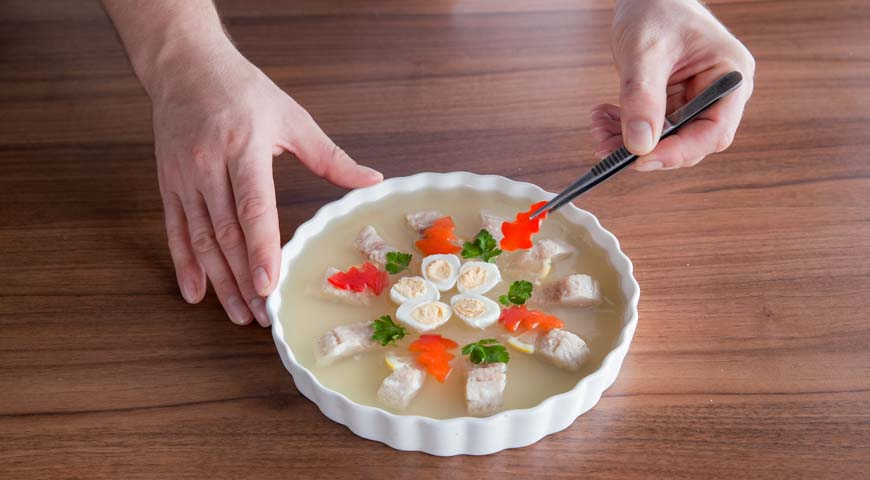
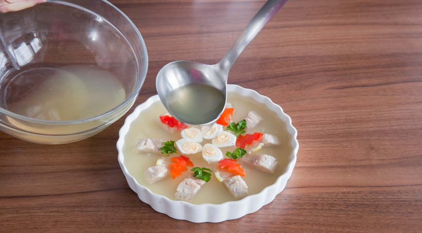

Заливное из судака многие считают такой же неотъемлемой частью
новогоднего меню, как и салат оливье. И даже знаменитая фраза из
всенародно любимого фильма за долгие годы так и не смогла испортить
репутацию блюда. Для его приготовления отлично подходит судак с его
нежной мякотью и не слишком резким рыбным запахом. Бульон же, сваренный
с головой и костями этой рыбы, получается очень насыщенным и вкусным.
Главное — не торопитесь, четко выполняйте все наши инструкции и уделите
особое внимание украшению заливного, чтобы его можно было с гордостью
водрузить в центр праздничного стола.

ИНГРЕДИЕНТЫ
перец молотый белый
лист лавровый
3 горошины черного перца
30 г гранулированного отечественного желатина на литр воды
1 небольшая морковь
судак
лук репчатый – 1 небольшая луковица
Для украшения:
2 некрупных соленых огурца
горсть зеленого горошка
половина сладкого красного перца
веточка петрушки
30 г красной икры
5 перепелиных яиц
1 средний лимон
ПОШАГОВЫЙ РЕЦЕПТ ПРИГОТОВЛЕНИЯ
Шаг 1

Подготовить рыбу для заливного из судака. Очистить чешую, начиная от
хвоста. Разрезать брюшко и вычистить внутренности. Удалить жабры.
Вырезать спинной плавник. Допустимо делать наоборот - отрезать плавники,
а потом счищать чешую. Но тогда можно случайно повредить кожу судака,
тем самым испортив будущий внешний вид заливного.
Шаг 2

Отделить голову судака. Аккуратно вырезать хребет с реберными костями.
Если это сразу не получилось, срезать отдельно реберные кости или
удалить их с помощью пинцета. Таким образом отдельно подготовить рыбные
кости и два куска филе судака.
Шаг 3

В 1,5 л холодной воды заложить косточки и голову судака. Очистить морковь и луковицу, также опустить в кастрюлю. Поставить кастрюлю на огонь, довести до кипения. Добавить перец и лавровый лист. Убавить огонь и варить бульон без крышки 1 ч. Пену, образующуюся на поверхности, снимать шумовкой. В процессе варки количество жидкости должно уменьшиться до 1 л.
Шаг 4

В это время желатин залить стаканом холодной кипяченой воды. Можно положить кусочек льда. Пока бульон для заливного варится, гранулы желатина увеличатся в 3-4 раза. Желатин нельзя заливать теплой водой, иначе он сразу склеится и его нельзя будет развести.
Шаг 5
Когда бульон будет готов, аккуратно процедить его через сито и четыре слоя марли в кастрюлю (ни в коем случае не алюминиевую!). В горячий процеженный бульон ввести набухший желатин. Тщательно размешать. Можно еще раз процедить. Так получается ланспик - горячее желе.
Шаг 6
Добавить около 1 ч. л. соли, размешать. Налить в миску 0,25 л ланспика и поставить в холодильник. Оставшуюся часть остудить до комнатной температуры, 16 °С. Для ускорения процесса можно поставить кастрюлю на лед. Если ланспик, наоборот, слишком холодный и начал застывать, поставить кастрюлю на водяную баню.
Шаг 7
Филе положить на блюдо, на пищевую пленку, кожей вниз. Чуть-чуть посолить, приправить белым молотым перцем. Накрыть пленкой сверху. Поставить блюдо в разогретую духовку, припустить рыбное филе в собственном соку при 100 °С в течение 1 часа. Рыбу можно просто отварить в воде, но тогда существенно теряются ее вкусовые качества.
Шаг 8

Залить первый слой ланспика, около 5 мм, на дно блюда для заливного. Блюдо убрать в холодильник.
Шаг 9

Готовое филе, еще в пленке, остудить после духовки. Поставить на длительное время в холодильник, лучше всего - на ночь, чтобы рыба выстоялась и при нарезке не крошилась. После этого аккуратно снять пленку с филе. Нарезать филе на порционные кусочки.
Шаг 10

Выложить рыбу с ножа на блюдо с уже застывшим желе. В этом положении рыбу зафиксировать, полив кусочки филе сверху тремя половниками ланспика. Блюдо с рыбой убрать в холодильник для фиксации до момента украшения.
Шаг 11
С помощью ножа сделать углубления на кожице лимона, нарезать его тонкими полукольцами, удалить косточки. С помощью выемок для кондитерских изделий вырезать из сладкого перца фигурки. Кусочки соленых огурцов использовать как постамент для половинок вареных перепелиных яиц. Каждую деталь рисунка сначала макать в ланспик, затем выкладывать на блюдо с рыбой.
Шаг 12

Залить все ланспиком. Он должен покрыть рыбу тонким слоем. Поставить блюдо в холодильник. Замерзшее желе из миски мелко порубить. Сделать кулек из пергаментной бумаги, положить внутрь рубленое желе. Завернуть кулек и отрезать острый конец.
Шаг 13
Достать блюдо с застывшим заливным. Выложить на перепелиные яйца красную икру, украсить горками желе.